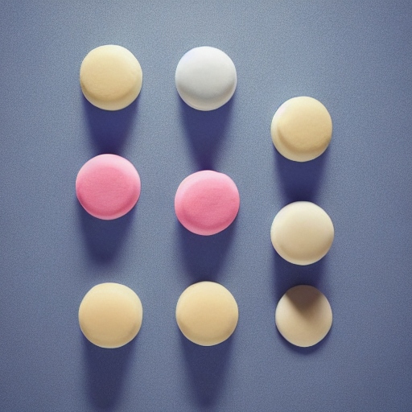

Go Back~
Moonlit Mochi Ice Cream

Description
About the dish
Ingredients
- 1 batch of mochi dough (made from glutinous rice flour)
- Assorted ice cream flavors (strawberry, matcha, chocolate, etc.)
- Edible glitter or edible pearl dust (optional)
- Moon-shaped cookie cutter
Steps:
- Prepare the mochi dough according to the package instructions or your favorite recipe.
- Roll out the mochi dough to your desired thickness and use the moon-shaped cookie cutter to cut out moon shapes.
- Allow the mochi moons to cool slightly.
- Take a small scoop of your chosen ice cream flavor and place it in the center of a mochi moon.
- Carefully fold the mochi around the ice cream, sealing it and forming a moon-shaped ice cream ball.
- Place the moonlit mochi ice cream balls in the freezer to firm up.
- If desired, dust the frozen mochi ice cream with edible glitter or pearl dust for a magical moonlit effect.
- Serve your Moonlit Mochi Ice Cream to celebrate the power of the moon, just like Sailor Moon and her friends!